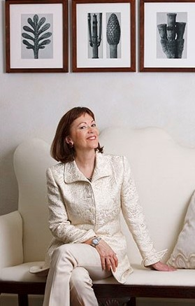
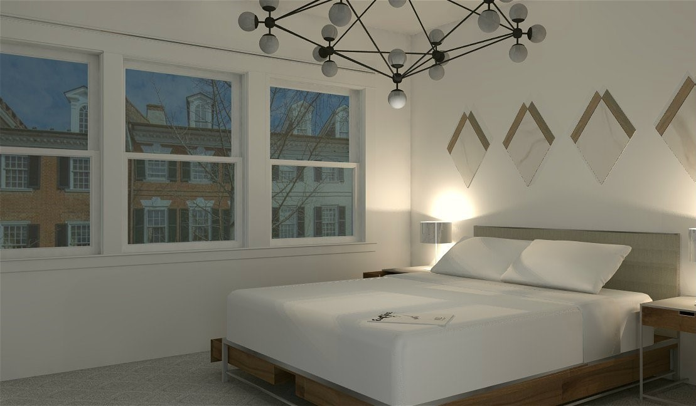
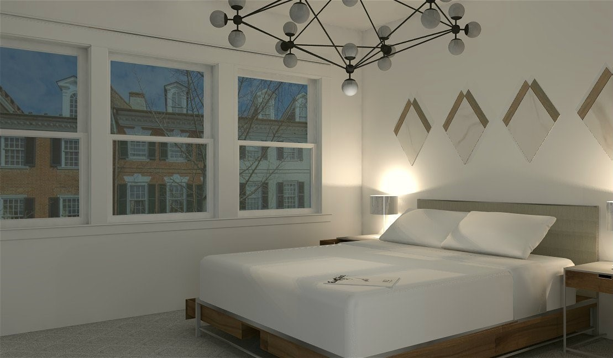

Sarah Van Eck.
Interior Designer.

Sarah Van Eck
I am graduating from Marymount University with a degree in Interior Design. This page is meant to display my work and a taste of what I am. My studies and my coursework integrate aesthetic theory, architectural principles, human-behavior concepts, technology, business pratices, and sustainable design. My focus in the classroom is design knowledge and skills, as well as a comprehensive design process with emphasis upon the developement of programming skills. This includes proficiencies that address client goals and needs, graphic and written communication, problem solving, critical thinking, ethics, and social responsibility. Although industry-standard computer software is taught, drafting and freehand sketching skills are emphasized for effective design communication.
My Skills
Hand-Drawn Renderings
Floor Plan Design
Sketching & Watercolor
Internships
Knoll Textile & Furniture Design Firm.
Responsible for organizing, cataloging and maintaining the textiles library, maintaining sample room inventory, keeping track of inventory levels and reordering when necessary, ensuring inventory is current, removing discontinued samples, adding new collections, filling sample requests, helping maintain fabric areas in showroom, and setting up displays.

Mary Drysdale Residential Interior Designer in D.C.
Resbonsibilities included; creating floor plans & construction documents, maintaining textiles library, creating design scheme presentations, developing finished schedules, and providing customer support.
Portfolio
Office Space


I am graduating from Marymount University with a degree in Interior Design. This page is meant to display my work and a taste of what I am. My studies and my coursework integrate aesthetic theory, architectural principles, human-behavior concepts, technology, business pratices, and sustainable design. My focus in the classroom is design knowledge and skills, as well as a comprehensive design process with emphasis upon the developement of programming skills. This includes proficiencies that address client goals and needs, graphic and written communication, problem solving, critical thinking, ethics, and social responsibility. Although industry-standard computer software is taught, drafting and freehand sketching skills are emphasized for effective design communication.
Dermatology Office


I am graduating from Marymount University with a degree in Interior Design. This page is meant to display my work and a taste of what I am. My studies and my coursework integrate aesthetic theory, architectural principles, human-behavior concepts, technology, business pratices, and sustainable design. My focus in the classroom is design knowledge and skills, as well as a comprehensive design process with emphasis upon the developement of programming skills. This includes proficiencies that address client goals and needs, graphic and written communication, problem solving, critical thinking, ethics, and social responsibility. Although industry-standard computer software is taught, drafting and freehand sketching skills are emphasized for effective design communication.
Labor and Delivery Suite


I am graduating from Marymount University with a degree in Interior Design. This page is meant to display my work and a taste of what I am. My studies and my coursework integrate aesthetic theory, architectural principles, human-behavior concepts, technology, business pratices, and sustainable design. My focus in the classroom is design knowledge and skills, as well as a comprehensive design process with emphasis upon the developement of programming skills. This includes proficiencies that address client goals and needs, graphic and written communication, problem solving, critical thinking, ethics, and social responsibility. Although industry-standard computer software is taught, drafting and freehand sketching skills are emphasized for effective design communication.
Modern Condo
 

I am graduating from Marymount University with a degree in Interior Design. This page is meant to display my work and a taste of what I am. My studies and my coursework integrate aesthetic theory, architectural principles, human-behavior concepts, technology, business pratices, and sustainable design. My focus in the classroom is design knowledge and skills, as well as a comprehensive design process with emphasis upon the developement of programming skills. This includes proficiencies that address client goals and needs, graphic and written communication, problem solving, critical thinking, ethics, and social responsibility. Although industry-standard computer software is taught, drafting and freehand sketching skills are emphasized for effective design communication.
Villa Savoye


I am graduating from Marymount University with a degree in Interior Design. This page is meant to display my work and a taste of what I am. My studies and my coursework integrate aesthetic theory, architectural principles, human-behavior concepts, technology, business pratices, and sustainable design. My focus in the classroom is design knowledge and skills, as well as a comprehensive design process with emphasis upon the developement of programming skills. This includes proficiencies that address client goals and needs, graphic and written communication, problem solving, critical thinking, ethics, and social responsibility. Although industry-standard computer software is taught, drafting and freehand sketching skills are emphasized for effective design communication.
Renderings


I am graduating from Marymount University with a degree in Interior Design. This page is meant to display my work and a taste of what I am. My studies and my coursework integrate aesthetic theory, architectural principles, human-behavior concepts, technology, business pratices, and sustainable design. My focus in the classroom is design knowledge and skills, as well as a comprehensive design process with emphasis upon the developement of programming skills. This includes proficiencies that address client goals and needs, graphic and written communication, problem solving, critical thinking, ethics, and social responsibility. Although industry-standard computer software is taught, drafting and freehand sketching skills are emphasized for effective design communication.
Contact Me
Lets get in touch. Send me a message: